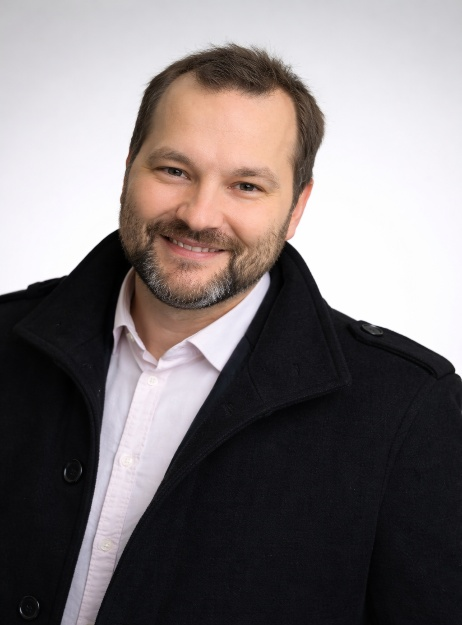
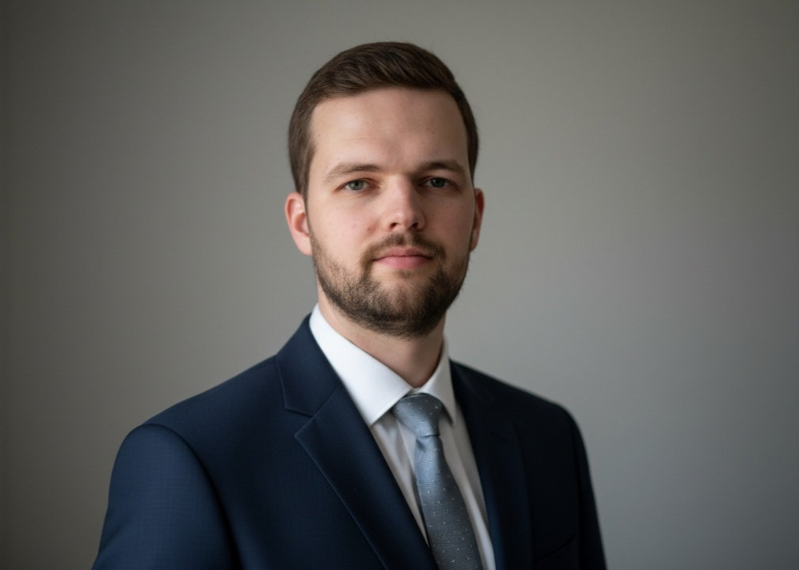
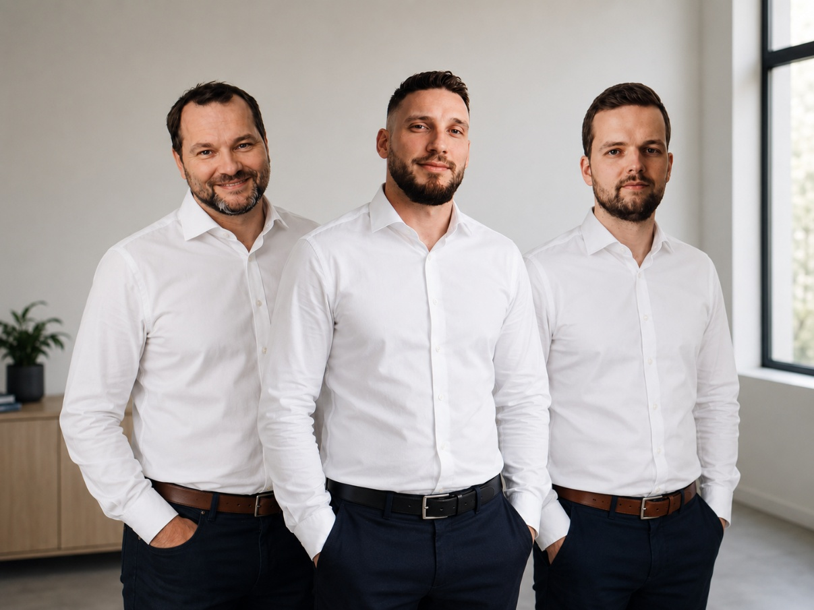

Konstruktion & technische Planung
Tim Rohde
Alter: 33 Jahre
Technischer Produktdesigner bei Stadtwerke Bochum Netz GmbH.
Drei Perspektiven, ein gemeinsames Ziel: eine fundierte technische Lösung.
Drei unterschiedliche berufliche Hintergründe bilden die Grundlage für die gemeinsame technische Projektarbeit.

Alter: 33 Jahre
Technischer Produktdesigner bei Stadtwerke Bochum Netz GmbH.

Alter: 27 Jahre
Zerspanungsmechaniker bei Eickhoff Maschinenfabrik GmbH.
Alter: 32 Jahre
Verfahrenstechnologe bei thyssenkrupp Rothe Erde GmbH.
Das Team kombiniert konstruktive Planung, fertigungstechnische Erfahrung und verfahrenstechnische Kompetenz. Die unterschiedlichen Perspektiven fließen in die Bewertung der Lösungsvarianten ein.

Gruppenfoto aus der Projektdokumentation.